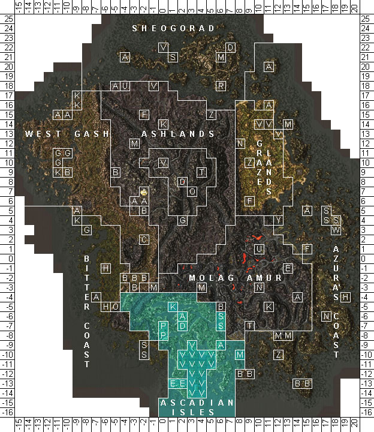

|  Map of the Ascadian Isles |
The Ascadian Isles are fertile, lush agricultural lowlands mainly under House Hlaalu control in Vvardenfell's southwestern area. The climate is temperate and comfortable, with moderate rainfall. The region encompasses land as far south as Castle Ebonheart, west to the Foyada Mamaea, north to the central Ashlands just past the Fields of Kummu shrine, and east to the large Daedric shrine of Ald Sotha. The land is rich in nutrients, and therefore littered with small farms and plantations. The islands themselves, while scattered, are close enough for easy transportation, the only main obstacle being Lake Amaya. Notable vegetation includes large mushroom-like plants not unlike trees, cork bulb, marshmerrow and muckspunge.
Major cities in the Ascadian Isles include the Imperial stronghold of Castle Ebonheart, the Temple city of Vivec, the market town of Suran, and the farming village of Pelagiad. The architecture consists of a mix of Hlaalu, Velothi and Imperial styles. Additionally, many of the councilors of Great House Hlaalu maintain plantations in the Isles to exploit the region's fertile soil, and to breed netch for their leather.